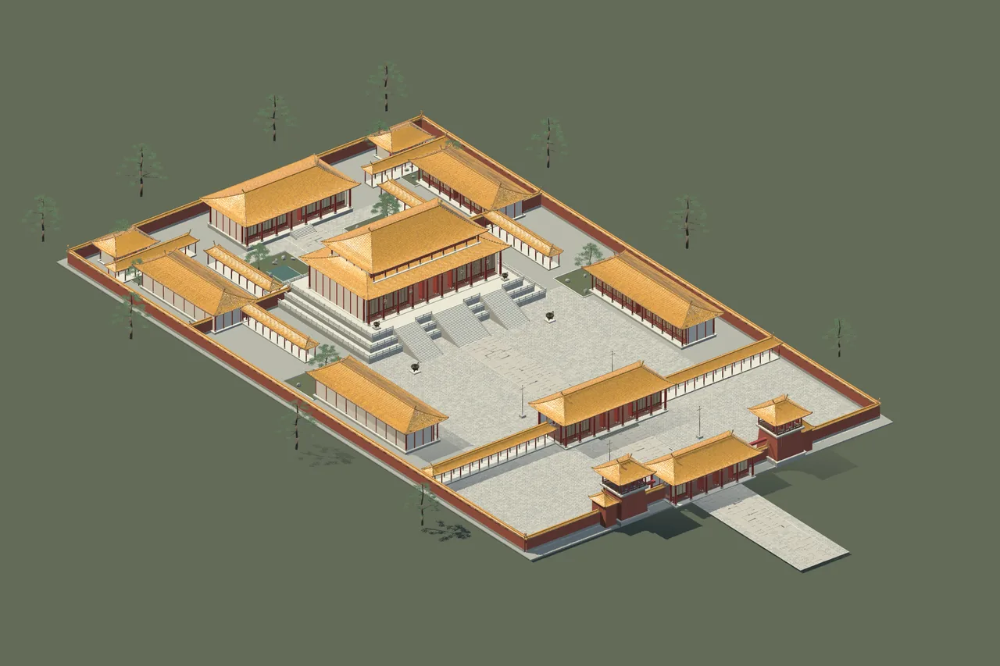
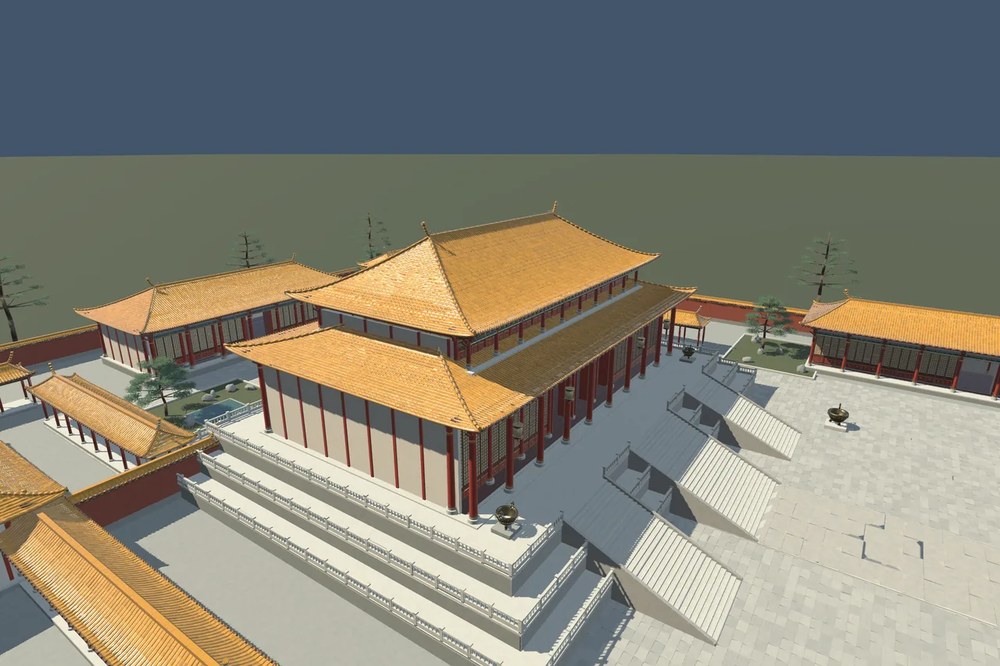
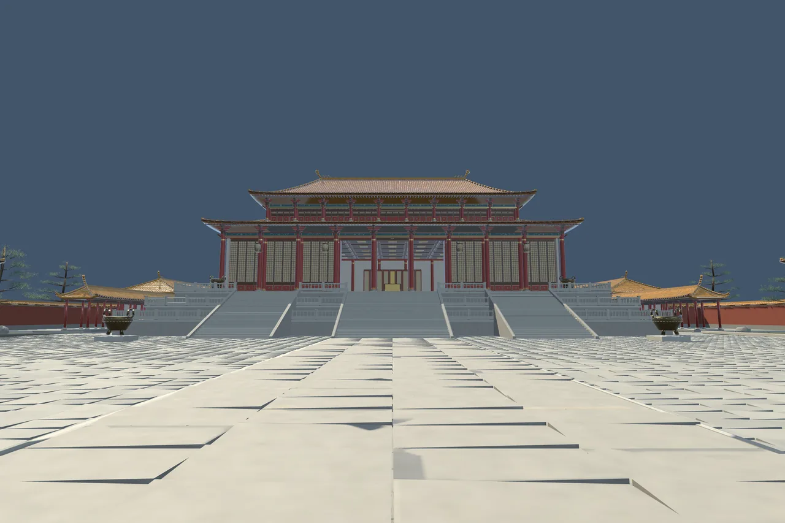

Imperial Palace
Architecture on a ceremonial scale.

Architecture on a ceremonial scale.
An imperial compound unfolds along a formal axis: gates and que towers, an audience court, a double-eave main hall and a quieter rear residence.
132 prefabs
5 sample scenes
3 geometry LODs
Local technical candidate · Not listed on the Asset StoreA closer look
Select an image to explore




Inside the project
One complete exterior compound in the Natural Realism look. 110 spatial sections and 18 semantic groups support scene organization; these are parts of one palace, not 110 separate buildings.
Tested configuration
Unity 6000.6.0f1
Universal Render Pipeline 17.6.0
Windows · Direct3D 11 · Linear
Other Unity versions, render pipelines and platforms have not been verified. No target frame rate is promised.
Scope & limitations
High-detail desktop environment. Furnished palace rooms and the standalone Imperial Garden are separate projects. No animated doors, gameplay, baked lighting, NavMesh or LOD crossfade. Fine ornaments have atlas-resolution limits at close range.